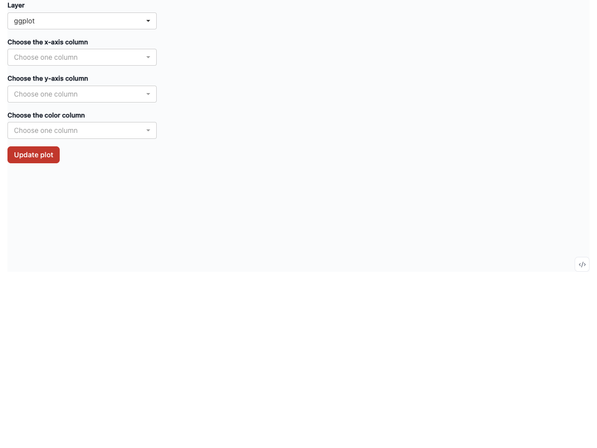
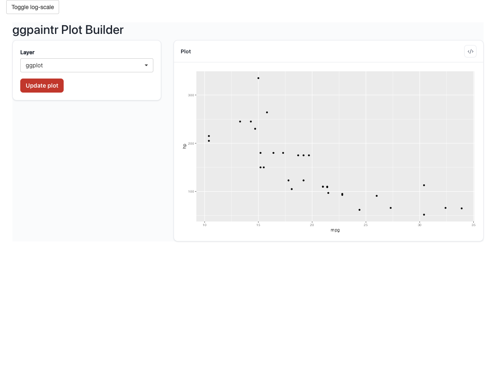

formula <- "ggplot(iris, aes(x = ppVar, y = ppVar, color = ppVar)) + geom_point()"
ui <- ptr_ui_page(
shiny::fluidRow(
shiny::column(5, ptr_ui_controls(formula, "plot1")), # widgets only
shiny::column(
7,
plotly::plotlyOutput(shiny::NS("plot1")("custom_plot"), # your own output
height = "500px") |>
ptr_ui_toggle_code(ptr_ui_code("plot1"))
)
)
)
server <- function(input, output, session) {
state <- ptr_server(formula, "plot1")
output[[shiny::NS("plot1")("custom_plot")]] <- plotly::renderPlotly({
res <- state$runtime()
shiny::req(isTRUE(res$ok), res$plot)
plotly::ggplotly(res$plot)
})
}
shiny::shinyApp(ui, server)12 Custom Rendering
“I want my own renderer.” ptr_server() returns the app’s state, so you can swap ggpaintr’s plot pane for plotly, ggiraph, or any custom host. The runtime stays inside ggpaintr; you replace only the output. This is a UI-side swap — you place your own output widget — not a separate server pattern.
12.1 The canonical pattern
Place your output widget at shiny::NS(id)(...) in the UI next to ptr_ui_controls(formula, id), call the single ptr_server(formula, id) in your plain server function (it namespaces internally — you do not write a moduleServer), and bind your widget off the returned state:
# UI: plotly::plotlyOutput(shiny::NS("plot1")("my_plot"))
# + ptr_ui_controls(formula, "plot1")
# server: state <- ptr_server(formula, "plot1")
# output[[shiny::NS("plot1")("my_plot")]] <-
# plotly::renderPlotly(state$runtime()$plot)Because ptr_server() returns to your top-level server, Shiny does not auto-namespace your output assignment — wrap the id with shiny::NS(id)(), the same expression you used on the UI side. (Single embedding: omit the id and the NS() wrapper.)
12.2 Two reading paths off the state
Inside renderX({...}) / reactive({...}) / observeEvent({...}) |
Outside reactive contexts (download handlers, snapshots) |
|---|---|
Read state$runtime() and unpack its slots ($ok, $plot, $code_text, $error). This takes the reactive dependency that wires re-renders to Update plot clicks. |
Call ptr_extract_plot(state) / ptr_extract_code(state) / ptr_extract_error(state). These wrap shiny::isolate() — current value, no reactive dependency. |
Mixing them — ptr_extract_plot(state) inside renderPlotly({...}) — silently breaks reactivity: the block fires once on mount and never again. Stick to state$runtime() inside reactive blocks.
12.3 Custom plot renderer
Render ptr_ui_controls() for the widgets, place your own output container, and never place ptr_ui_plot() — with no UI slot bound to it, the built-in plot output stays inert, so there is no bundled pane at all:

</> toggle still serves the generated code.req(isTRUE(res$ok), res$plot) keeps the panel quiet between draws and on transient error states. The gallery’s plotly and ggiraph originals (Chapter 6 § “Interactive output packages”) are the graphics this pattern brings to life.
If you would rather keep ggpaintr’s chrome and add a second custom view, capture the module’s state and render a second output off it — ptr_ui(formula, "p") in the UI plus state <- ptr_server(formula, "p") in the server — but ptr_ui() always renders the bundled plot pane alongside your custom one. Use the bare-piece composition above when you want exactly one (custom) plot.
12.4 Custom code panel
Bind to state$runtime() inside renderText({...}) and pull code_text off it — in the same server function, after state <- ptr_server(formula, "plot1"):
output[[shiny::NS("plot1")("my_code")]] <- shiny::renderText({
state$runtime()$code_text %||% ""
})Be aware that code_text holds only the substituted formula code — any ptr_gg_extra() extras (see below) are folded into the plot, never into this slot, so the panel above silently drops them. If your panel must show extras too, keep a state$runtime() read for the reactive dependency and return ptr_extract_code(state) instead — that accessor appends the extras text on top, exactly like the bundled code panel does.
For non-reactive contexts (a download handler, a snapshot test), the public accessor is ptr_extract_code(state). It returns a single string and includes any ptr_gg_extra() expressions captured on the state.
12.5 Custom error UI
state$runtime()$error is the latest runtime error string, or NULL when the last cycle succeeded:
output[[shiny::NS("plot1")("my_status")]] <- shiny::renderUI({
msg <- state$runtime()$error
if (is.null(msg)) shiny::tags$div(class = "status-ok", "Plot is up to date")
else shiny::tags$div(class = "status-error", msg)
})ptr_extract_error(state) is the non-reactive counterpart.
12.6 Programmatic layer injection — ptr_gg_extra()
ptr_gg_extra(state, ...) evaluates one or more ggplot2 expressions and attaches the results as “extras” on the state. The runtime folds them into the rendered plot on the next cycle; in the generated code they never enter state$runtime()$code_text — the extras text is appended on top only by ptr_extract_code(state) and the bundled code panel. Each call replaces the previously captured extras — pass everything you want layered on in a single call:
formula <- "ggplot(mtcars, aes(x = mpg, y = hp)) + geom_point()"
ui <- shiny::fluidPage(
shiny::actionButton("add_log", "Toggle log-scale"),
ptr_ui(formula)
)
server <- function(input, output, session) {
state <- ptr_server(formula)
shiny::observeEvent(input$add_log, {
ptr_gg_extra(state, ggplot2::scale_x_log10())
})
}
shiny::shinyApp(ui, server)
scale_x_log10() into the next draw via ptr_gg_extra().Eval errors from the captured expressions leave the existing extras untouched (atomic update), and extras are suppressed automatically while the underlying runtime reports a failure — on the custom-renderer path (state$runtime() reads and the ptr_extract_plot() / ptr_extract_code() / ptr_extract_error() accessors), stale extras from a prior successful draw never surface during an error state. The bundled panes behave differently: their retain-on-error fallback keeps the last successful plot and code on screen — extras included — while the error pane shows the new diagnostic.